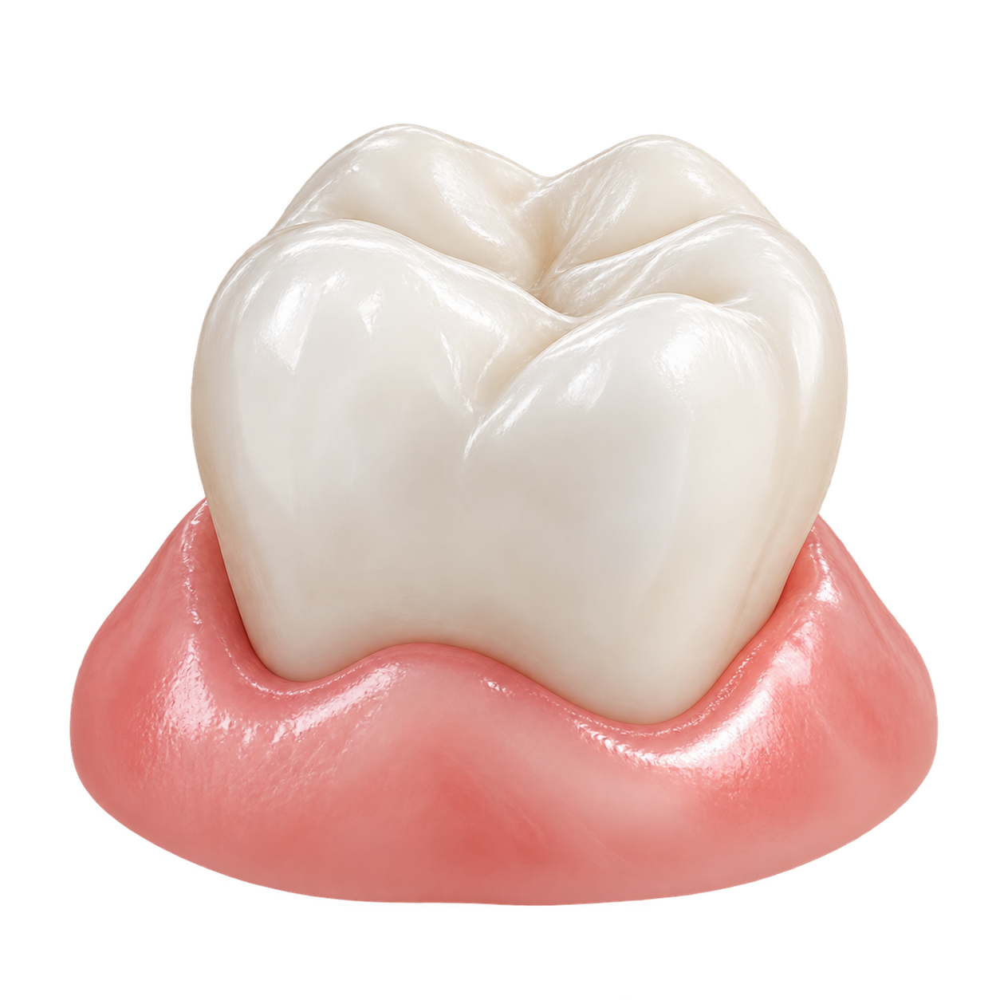

닥터스 · 의약외품 잇몸치약
닥터스 쉴드
지금의 사용감과 관리 목적에 맞춰.
소프트·밸런스·코어, 나에게 맞는 치약을 살펴보세요.


CARE · 선택과 연결
한 제품으로 시작하고,
필요할 때 다른 케어를 연결하세요.
지금의 사용감에 따라 선택하고, 관리 목적에 따라 연결합니다.
소프트SOFT
예민한 시기의
부드러운 사용감

상태에 따라선택 · 전환 평소 일상관리
밸런스BALANCE
치아와 잇몸의
매일 관리
코어CORE
단독으로 선택하거나
다른 양치 시간에 연결
하루 마지막 양치에도.밤 전용 제품은 아닙니다.
세 제품을 모두 쓰거나 정해진 시점에 바꿀 필요는 없습니다. ‘연결’은 서로 다른 양치 시간에 제품을 선택하는 예시입니다. 치약을 섞어 쓰는 방법을 뜻하지 않습니다.
제품의 공통 정보
무엇이 다른지,
확인할 수 있는 수치로.
불소 함량, 연마제 배합량, 제품 설계 pH와 코어의 HAP 함량을 비교해 보세요.
| 구분 | 소프트 | 밸런스 | 코어 |
|---|---|---|---|
| 불소 | 1,000 ppm | 1,450 ppm | 1,000 ppm |
| 덴탈타입실리카연마제 원료 배합량 | 8% | 15% | 8% |
| 제품 설계 pH | 6.8 | 7.0 | 7.3제품 기획 기준 |
| HAP기타첨가제 | — | — | 10% 배합 |
‘—’는 이 비교표에서 별도로 안내하지 않는 항목입니다. 무첨가를 의미하지 않습니다.
pH는 치약의 설계값
제품 설계 pH와 사용 후 입안의 pH는 다른 정보입니다. 숫자가 높다는 이유만으로 더 좋은 치약을 뜻하지 않습니다.
연마제 함량 ≠ 마모도
실리카 배합량은 실제 마모 수치인 RDA와 다릅니다. 함량만으로 저연마·저자극 시험 결과를 설명하지 않습니다.
HAP 10%는 배합 사실
코어의 하이드록시아파타이트는 기타첨가제입니다. 함량 자체가 치료나 치아 회복 효과를 입증하지는 않습니다.
선택을 돕는 질문
이럴 때는 어떻게 고르나요?
교정 초기에는 소프트를 어떻게 연결하나요?
닥터스 교정관리 안내에서는 장치 장착 초기나 조정 후 양치가 부담스러울 때, 부드러운 사용감을 기준으로 닥터스 쉴드 소프트를 살펴봅니다. 교정 시기만으로 치약을 고정하지 않으며, 소프트는 교정 중에만 사용하는 제품이 아닙니다.
장치에 적응하면 반드시 밸런스로 바꾸나요?
정해진 시점에 바꾸는 방식은 아닙니다. 사용감이 편안하고 일상 관리를 이어가고 싶을 때 밸런스를 선택지로 살펴봅니다. 조정 후 다시 불편해지면 사용감과 관리 방법을 다시 확인합니다.
코어는 밤에만 쓰거나, 마지막 단계에서 쓰나요?
코어는 시간대나 교정 시기에 관계없이 치아·잇몸 복합관리 목적으로 선택할 수 있습니다. 하루 마지막 양치는 브랜드가 제안하는 사용 예시이며, 소프트와 밸런스를 거친 뒤에만 쓰는 제품이 아닙니다.
세 제품의 치석침착예방 효능도 같나요?
소프트와 밸런스에는 치석침착예방이 효능·효과에 포함됩니다. 코어에는 이 항목이 없습니다. 치석침착예방을 이미 굳어진 치석을 제거한다는 의미로 설명하지 않습니다.
제품에 표시된 용법·용량과 사용상의 주의사항을 확인하세요. 사용감에는 개인차가 있습니다. 제품별 효능·효과는 각 상세페이지에서 확인할 수 있습니다.